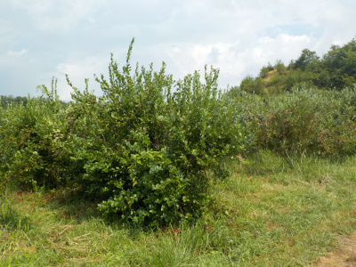
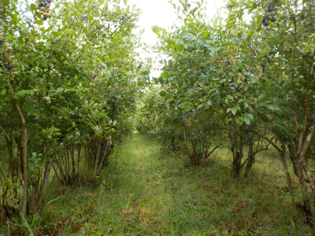
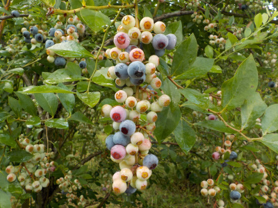

八川農園のブルーベリーは甘かったです。
2021/08/01
オフィシャルで情報をあまり発信していないみたいで、ネット検索で場所の特定がしにくかったです。
この広い畑がブルーベリー園です。
お客さん多かったので、そのうちグーグルマップにコメントとか写真が追加されれば分かりやすくなるでしょう。
地図はアップなので、縮小して市街地図に変更すると場所確認がしやすいです。

土地が広いのでブルーベリーの木が沢山ありました。

木と木の感覚が狭いので、ジャングルっぽいです。

ブルーベリーがぎっしり実っている枝が多く、ブドウみたいでした。
ブルーベリー園のブルーベリーって甘酸っぱい印象があったんですが、ここのは甘かったです。
素人考えですが、ブルーベリーって熟れすぎると酸味が強くなるんじゃないかな。
園の人が、ここのエリアは時期が終わっていますと言われたところは酸っぱくて、食べごろって案内された場所は甘くて美味しかったです。
園の人の案内があるといいですね。